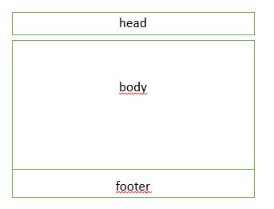

Lo primero que conviene remarcar es que HTML5 no es un lenguaje nuevo en contraposición a HTML, sino una nueva versión del mismo lenguaje. También hay que recordar que HTML5 incorpora cambios en profundidad que los navegadores antiguos no son capaces de mostrar, por lo tanto que hay que tener actualizado el navegador.
